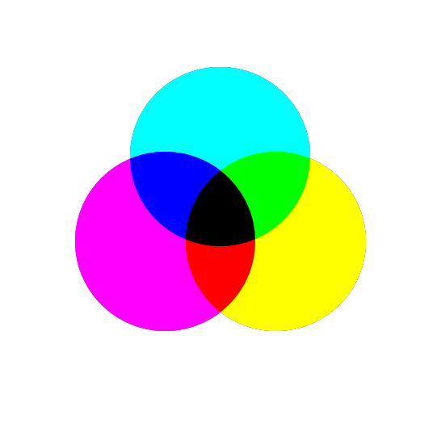
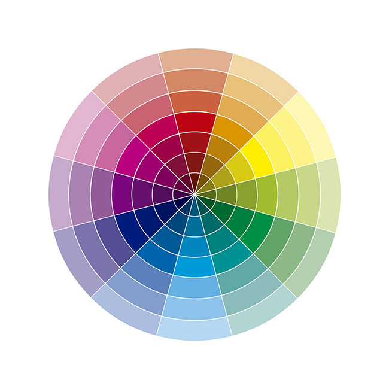
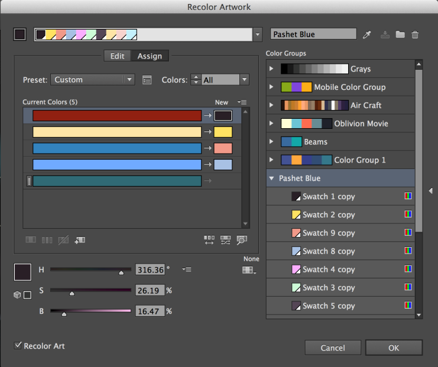
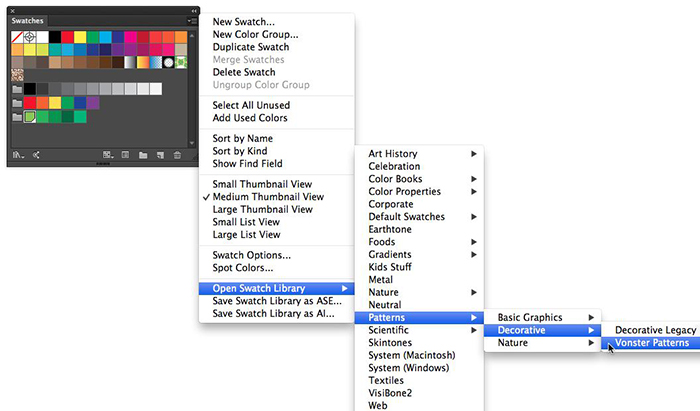

Como realizar combinaciones efectivas de color en diseño web
Una de las más recientes necesidades en el mundo del desarrollo web y el diseño web de hoy en día es sobre las percepciones visuales. Constantemente preguntamos: ¿cómo causar un mayor impacto con nuestros proyectos? ¿Cómo generar mayor recordación? ¿Cómo ser más funcionales? ¿más estéticos? ¿más útiles para nuestros usuarios? Esta es una meta compleja y demandante que día a día tratamos de alcanzar. Sin embargo sería un buen comienzo preocuparnos por algunos detalles importantes del diseño.
Uno de los elementos más poderosos en proyectos de diseño web son nuestras paletas de color, los colores correctos pueden transformar la forma en que nos ven, y no es siempre un proceso fácil. Actualmente, podemos encontrar muchas páginas web que tratan de ayudarnos en esta tarea, sin embargo si lo que deseas es crear tus propios conceptos de color, toma nota de los siguientes aspectos.
Hay solo dos formas en las que percibimos el color, la primera son los colores pigmento, en esta categoría la luz refleja siempre un determinado color sobre un material específico, tal como la piedra Lapis lazuli, que produce el pigmento azul y es el inicio de todos los tarros de pintura azul en el mundo, en este sentido los colores primarios son lo que hemos conocido siempre amarillo, azul y rojo; sin embargo es muy importante deshacernos de esta idea, nosotros trabajamos con colores luz, estos colores provienen del espectro real del color en la física de nuestro mundo y de esta manera lo reflejamos en nuestras pantallas.
El color pigmento son colores sustractivos, si los mezclas darán como resultado un tono negro. Los colores luz son aditivos, el resultado de su mezcla es luz blanca. Debido a esto trabajamos en un modelo RGB de color,en donde nuestros respectivos colores primarios son rojo, verde y azul (red, blue, green).pero no se trata solo de utilizar este modelos para que nuestros colores funcionen bien en pantalla, lo que realmente necesitamos es pensar nuestras armonías de color con base en estos primarios también.
Modelo subtractivo

Modelo additivo

Para empezar a mejorar nuestras paletas de color y hacer combinaciones mucho más efectivas necesitamos recordar nuestros colores primarios y secundarios en el modelo aditivo, rojo, verde y azul como primarios y cian, magenta y amarillo como secundarios. Puedes obtener los colores secundarios mezclando los primarios, y si quieres saber los intermedios puedes combinar los primarios en proporciones de 1 a 2. Ahora podemos entender la composición del círculo cromático, este importante elemento nos ayudara a realizar las armonías de color.
#Circulo cromatico 
La primera forma de realizar combinaciones efectivas es usando colores complementarios, estos son colores opuestos en el círculo cromático. Puedes usar esta técnica para mejorar el contraste de color y realizar diseños más atractivos e impactantes.
Colores complementarios

Los colores análogos son colores cercanos en el círculo cromático, con esta técnica puedes crear estilos coloridos y agradables.
Colores analogos

Puedes crear triadas de color realizando un triángulo sobre el círculo en una distribución equitativa, los 3 colores resultantes serán armónicos el uno al otro.
Triadas de color

También puedes continuar realizando figuras geométricas sobre el circulo cromático y obtendrás nuevas y complejas formas de combinar los colores siempre de manera efectiva y armónica. Por ejemplo algunas otras técnicas mencionan el dibujar un cuadrado, el resultado te dará más opciones de color y variabilidad, muy útil si vas a trabajar con diseños un poco más elaborados. Puedes obtener este tipo de colores usando 4 puntas en igual distribución sobre el círculo cromático.
Uno de los elementos inolvidables cuando estamos escogiendo colores es la saturación, esta noción corresponde al agregado de blanco o negro a nuestro color puro, dándonos como resultado las conocidas variaciones en oscuros y claros. Algunas tendencias populares en diseño web recomiendan baja saturación, esto significa añadir un porcentaje de blanco a nuestra muestra de color para apelar a un estilo plano y suave. Pero esto siempre dependerá de nuestro concepto de diseño.
Ejemplos flat design

Otra recomendación relacionada es dar la misma importancia al negro y blanco puros en nuestra composición de color, recuerda esto es muy importante para un diseño limpio e impactante. El color tiene también unas características muy especiales, y es su poder expresivo y comunicativo de emociones y sensaciones, a pesar de que esto siempre depende de la forma en la que uses los símbolos y otros elementos de la imagen hay algunos hechos comprobados sobre la psicología del color. Es difícil categorizar este tipo de adjetivos ya que siempre depende del punto de vista humano pero a continuación mencionamos algunas reglas básicas.
El primer elemento es la temperatura del color, los colores cálidos, por ejemplo, van desde el rojo hasta el amarillo pasando por los tonos naranjas. Estos colores son colores de alta frecuencia de onda y los percibimos como colores activos y vibrantes.
Los colores fríos son diferentes estados de azul, pasando por varios niveles de saturación, estos tonos brindan sensaciones de relajación, podemos generar emociones de suavidad y tranquilidad gracias a estos tonos.


También podemos encontrar muchas categorías para estos estados psicológicos del color por ejemplo, los colores frescos, son mayormente estados del verde que nos dan sensaciones de efervescencia, nos recuerdan a la naturaleza y los estados líquidos. Así mismo los colores magenta de baja saturación se asocian a conceptos femeninos y los colores oscuros en su mayoría se asocian a conceptos de elegancia.
Para finalizar revisemos un pequeño resumen sobre algunas herramientas útiles en nuestros programas de diseño más usuales, no olviden comentar sus herramientas preferidas para seleccionar paletas de color.
- Volver a colorear illustración – Adobe Illustrator

- Librerias de color en illustrator.

- Muestras de color en Illustrator

- Adobe Kuler es la página oficial de adobe para diseñar muestras de color, puedes conectarlo con tus programas de adobe preferidos.

visita el trabajo de este autor en su sitio web.
comments powered by Disqus